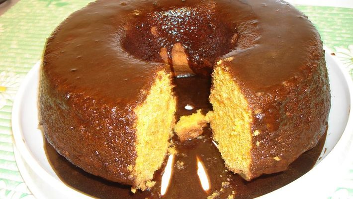

Aqui eu vou escrever receitinhas gostosas hmmm
RECEITA DE bolo de cenoura

1 xícara de cenoura lavada, descascada e cortada em cubinhos
½ xícara de açúcar
1 xícara de farinha de trigo
1 colher de chá de fermento em pó
2 ovos
2 colheres de sopa de manteiga
1/3 xícara de calda de chocolate
Modo de preparo
-
Coloque no LIQUIDIFICADOR MONDIAL a cenoura, os ovos e a manteiga e bata por cerca de 5 minutos, até ter uma massa homogênea.
-
Transfira essa massa para uma tigela e vá adicionando aos poucos a farinha, depois o fermento.
-
Misture tudo até a massa ficar bem lisa.
-
Use uma forma que caiba na sua AIR FRYER MONDIAL.
-
Unte a forma com manteiga e polvilhe farinha de trigo.
-
Aqueça sua Air Fryer em 160º por 15 minutos.
-
Coloque a massa na forma e coloque na AIR FRYER MONDIAL
-
Aumente para 200º e deixe por mais 10 a 15 minutos, dependendo da potência da sua Air Fryer.
-
Retire, desenforme e use a sua cobertura de chocolate favorita